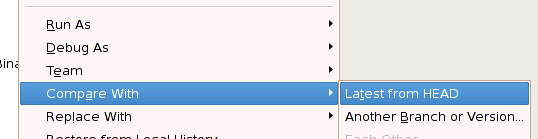
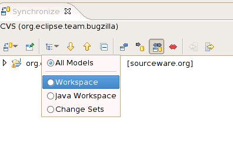
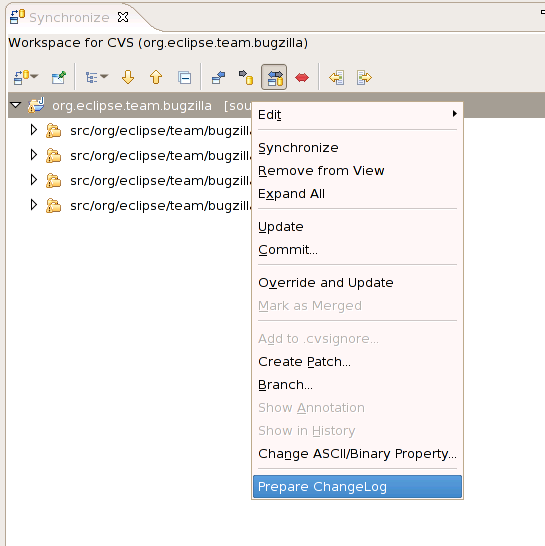
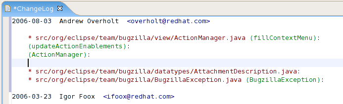

The ChangeLog plug-in for Eclipse is a basic set of extensions to enable ChangeLog functionality for projects in Eclipse.
The plug-in is split into two sections. The invocation module that writes the entry to the ChangeLog file, and the Preferences modules, where you can change several behaviors assorted with the plug-in.
To access the ChangeLog Preferences, click Window > Preferences > ChangeLog .
The screenshot above illustrates the preferences associated with the ChangeLog plug-in. The effect of each preference is described below.
You can invoke the ChangeLog plug-in by navigating to Edit > ChangeLog Entry , and choosing ChangeLog Entry,

When clicked, the ChangeLog plug-in compiles an entry, the form of which depends on which formatter is set. It will look at the current source file that is active in the editor, calculate the current function containing the editor caret, and format the entry according to the rules of the selected formatter.
Prepare ChangeLog will look at CVS diff of selected resources and insert/generate ChangeLog entries automaticaly. You can invoke this feature by first right-clicking on a parent resource and choosing Compare With > Latest from HEAD,

When clicked, go into Synchronization View and change the model to Workspace.

After confirming changes, right-click on the resource that you wish to write ChangeLog about and choose Prepare ChangeLog. Note that PrepareChangeLog will look in to all files under this resource recursively to detect changes.

Prepare ChangeLog will open up ChangeLog editor and insert entries.

ChangeLog Editor has syntax highlighting and file-hyperlink feature. Inside ChangeLog Editor, if you hold on 'Ctrl' or 'Apple' key, you can click on the file-hyperlinks and it will open that file in a corresponding editor.